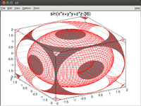

ROOT
Hinweis:
Dieser Artikel behandelt das Programm ROOT zur Erstellung von mathematische Analysen. Informationen zum Administrator-Konto root und administrativen Rechten unter Linux erhält man im Artikel sudo.
Dieser Artikel wurde für die folgenden Ubuntu-Versionen getestet:
Ubuntu 14.04 Trusty Tahr
Zum Verständnis dieses Artikels sind folgende Seiten hilfreich:
ROOT  ist eine am CERN entwickelte objektorientierte OpenSource-Software (Lizenz: LGPL, Teile GPL), die zur Analyse von Daten eingesetzt wird. Ursprünglich für die Analyse von Daten im Bereich der Teilchenphysik entwickelt, wird ROOT inzwischen auch in anderen Anwendungsbereichen wie z.B. beim Data Mining eingesetzt. ROOT weist einen sehr großen Funktionsumfang auf, darunter:
ist eine am CERN entwickelte objektorientierte OpenSource-Software (Lizenz: LGPL, Teile GPL), die zur Analyse von Daten eingesetzt wird. Ursprünglich für die Analyse von Daten im Bereich der Teilchenphysik entwickelt, wird ROOT inzwischen auch in anderen Anwendungsbereichen wie z.B. beim Data Mining eingesetzt. ROOT weist einen sehr großen Funktionsumfang auf, darunter:
Bedienung über Konsole und/oder graphische Benutzeroberfläche
Erstellen von Histogrammen (2D/3D)
Erstellen von Graphen
Fitten von Funktionen
Statistische Datenanalyse
Zahlreiche mathematische Standard-Funktionen
3D-Visualisierungen
Grafik-Export in zahlreiche Formate wie Postscript, EPS, PDF, PNG u.a.
Tree Objekt zur Speicherung von (Roh-)Daten
Eigenes ROOT-Dateiformat zur Speicherung von ROOT Objekten
Unterstützung von Distributed Computing
ROOT wird vor allen Dingen in vielen Bereichen der Physik genutzt. (aus der Wikipedia  )
)
Installation¶
ROOT kann ab Ubuntu 12.10 wieder (s.u.) aus den Paketquellen von Ubuntu installiert werden. Es muss nur folgendes Paket installiert [1] werden:
root-system (universe)
 mit apturl
mit apturl
Paketliste zum Kopieren:
sudo apt-get install root-system
sudo aptitude install root-system
Manuelle Installation¶
Hinweis:
Für Ubuntu 11.04 sind sowohl Metapaket als auch alle abhängigen ROOT-Pakete aus den Ubuntu-Quellen entfernt worden. Grund dafür ist ein Bug beim Kompilieren. Das Problem wird folgendermaßen beschrieben:
root-system version 5.18.00-2.3ubuntu7 failed to build on armel
So lange, wie dieses Problem bestand, wurde ROOT nicht mehr implementiert. Dies wurde auch auf der öffentlich einsehbaren Launchpad-Seite kommuniziert: "There is no current release of this source package in The Release (Geändert duch den Autor, da nicht nur für 11.04 gültig). You can still report bugs, make translations, and so on, but they might not be used until the package is published." Will man ROOT unter Ubuntu Versionen 11.04 bis 12.04 nutzen, so muss man auf die manuelle Installation ausweichen, bzw. auf die inoffizielle Debian-Paketquelle ausweichen.
Die aktuelle oder auch eine ältere Version von ROOT kann man selbst kompilieren. Das Archiv mit dem Quellcode findet man auf der offiziellen Seite von ROOT. Diese Anleitung bezieht sich auf das Kapitel "3.1. Environment driven build" der Installationsanleitung. Die Anleitung befindet sich unter /README/INSTALL.
Archiv entpacken¶
Der Quellcode wird mit folgendem Befehl entpackt (XX ist entsprechend der Version zu ersetzen):
cd ~ tar xzvf root_vX.XX.XX.source.tar.gz
Link setzen¶
Es ist sinnvoll, das entpackte Archiv root entsprechend der Versionsnummer zu verschieben und einen Link auf das Archiv zu setzen. Dies ermöglicht die parallele Installation verschiedener Versionen.
mv root root_vX.XX.XX ln -s root_vX.XX.XX.source.tar.gz root
Umgebungsvariablen setzen¶
Um ROOT von der Kommandozeile aus zu starten, müssen in der Datei ~/.bashrc die folgenden Umgebungsvariablen gesetzt werden. Anschließend ab- und wieder neu anmelden, damit die Variablen aktiv werden.
export ROOTSYS=/pfad_zu_root/root export PATH=$ROOTSYS/bin:$PATH export LD_LIBRARY_PATH=$ROOTSYS/lib:$LD_LIBRARY_PATH
Konfigurieren & Kompilieren¶
Das Konfigurieren erfolgt mit dem Befehl ./configure, welchem als Option die Architektur mitgegeben wird. Weitere Konfigurationsoptionen lassen sich mit dem Befehl ./configure --help anzeigen. Vor dem Konfigurieren sollte überprüft werden, ob alle vorausgesetzten Programme (Abhängigkeiten) aus den offiziellen Paketquellen installiert wurden. Eine vollständige Liste findet sich auf der offiziellen Homepage unter Build prerequisites .
cd $ROOTSYS ./configure linux make
ROOT starten¶
Wenn das Kompilieren erfolgreich war, sollte sich ROOT mit folgendem Befehl starten lassen
root
Beispiele¶
Funktionen¶
 Mit Hilfe von ROOT lassen sich auf einfache Weise Funktionen grafisch darstellen. Dazu können die folgenden Befehle in der ROOT Konsole eingegeben werden. Der Prompt der ROOT Konsole ist "root []" und muss nicht extra mit eingegeben werden.
Die Optionen setzten sich folgendermaßen zusammen: TF3(name, funktion, x-min, x-max, y-min, y-max, z-min, z-max)
Zweidimensional (2D)¶
root [2] TF2 *f2 = new TF2("func2","x*y*(cos(x)/x+cos(y)/y)",-10,10,-10,10)
root [3] f2->Draw() Dreidimensional (3D)¶
root [4] TF3 *f3 = new TF3("func3","sin(x*x+y*y+z*z-36)",-2,2,-2,2,-2,2)
root [5] f3->Draw()  - für Version 5.24, PDF-Format (10 MiB)
- für Version 5.24, PDF-Format (10 MiB)- Erstellt mit Inyoka
-
 2004 – 2017 ubuntuusers.de • Einige Rechte vorbehalten
2004 – 2017 ubuntuusers.de • Einige Rechte vorbehalten
Lizenz • Kontakt • Datenschutz • Impressum • Serverstatus -
Serverhousing gespendet von